1과목: 전기자기학
1. 변위전류와 관계가 가장 깊은 것은?
2. 비투자율은? (단, μ0는 진공의 투자율, Xm은 자화율이다.)
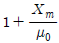
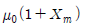
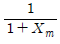
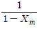
3. 대전도체 내부의 전위는?
4. 어떤 막대꼴 철심이 있다. 단면적이 0.5m2, 길이가 0.8m, 비투자율이 20이다. 이 철심의 자기 저항[AT/ωb]은?
5. 간격 d[m]의 평행판 도체에 V[kV]의 전위차를 주었을 때 음극 도체판을 초속도 0으로 출발한 전자 e[C]이 양극 도체판에 도달할 때의 속도는 몇 [m/s]인가? (단, m[kg]은 전자의 질량이다.)
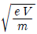
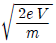
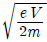
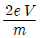
6. 15A의 무한장 직선 전류로부터 50cm 떨어진 p점의 자계의 세기는 약 몇 [AT/m]인가 ?
7. 내부장치 또는 공간을 물질로 포위시켜 외부 자계의 영향을 차폐시키는 방식을 자기차폐라 한다. 다음 중 자기 차폐에 가장 좋은 것은?
8. 다음 식 중 옳지 않은 것은?
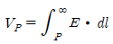
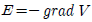
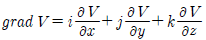
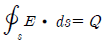
9. 반지름 a, b(a<b) 인 동심 원통 전극 사이에 고유저항 ρ의 물질이 충만되어 있을 때 단위 길이당의 저항은?
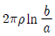
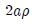
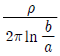
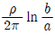
10. 페러데이 법칙에서 유도 기전력 e[V]를 옳게 표현한 것은?
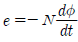
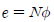
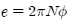
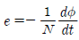
11. 변의 길이가 각각 a[m], b[m]인 그림과 같은 직사각형 도체가 X축 방향으로 v[m/s]의 속도로 움직이고 있다. 이때 자속밀도는 X-Y 평면에 수직이고 어느 곳에서든지 크기가 일정한 B[Wb/m2]이다. 이 도체의 저항을 R[Ω]이라고 할 때 흐르는 전류는 몇 [A]인가?(오류 신고가 접수된 문제입니다. 반드시 정답과 해설을 확인하시기 바랍니다.)
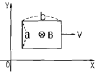
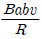
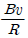
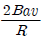
12. 200V, 30W인 백열전구와 200V, 60W인 백열전구를 직렬로 접속하고, 200V의 전압을 인가하였을 때 어느 전구가 더 어두운가? (단, 전구의 밝기는 소비전력에 비례한다.)
13. B-H 곡선을 자세히 관찰하면 매끈한 곡선이 아니라 B가 계단적으로 증가 또는 감소함을 알 수 있다. 이러한 현상을 무엇이라 하는가?
14. 쌍극자의 중심을 좌표 원점으로 하여 쌍극자 모멘트 방향을 x축, 이와 직각 방향을 y축으로 할 때 원점에서 같은 거리 r만큼 떨어진 점의 y방향의 전계의 세기가 가장 작은 점은 x축과 몇 도의 각을 이룰 때인가?
15. 3개의 콘덴서 C1=1μF, c2=2μF, C3=3μF 를 직렬 연결하여 600V의 전압을 가할 때, C1 양단 사이에 걸리는 전압은 약 몇 V인가?
16. 접지된 구도체와 점전하간에 작용하는 힘은?
17. 진공 중에서 빛의 속도와 일치하는 전자파의 전파속도를 얻기 위한 조건으로 맞는 것은?
18. 지름 10cm의 원형 코일에 1A의 전류를 흘릴 때, 코일 중심의 자계를 1000A/m로 하려면 코일을 몇 회 감으면 되는가?
19. 유전율이 10인 유전체를 5 V/m인 전계 내에 놓으면 유전체의 표면전하밀도는 몇 [C/m2]인가? (단, 유전체의 표면과 전계는 직각이다.)
20. 전기력선의 설명 중 틀린 것은?
2과목: 전력공학
21. 그림과 같은 유황곡선을 가진 수력지점에서 최대 사용 수량 OC로 1년간 계속 발전하는데 필요한 저수지의 용량은?
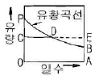
22. 1상의 대지 정전용량 C[F], 주파수 f[Hz]인 3상 송전선의 소호 리액터 공진탭의 리액턴스는 몇 [Ω]인가? (단, 소호리액터를 접속시키는 변압기의 리액턴스는 Xt[Ω])이다.
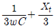
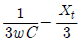
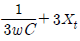
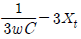
23. 철탑의 탑각 접지저항이 커지면 우려되는 것으로 옳은 것은?
24. 유효낙차 100m, 최대사용수량 20m3/sec, 수차효율 70%인 수력 발전소의 연간 발전 전력량은 약 몇 [kWh]정도 되는가? (단, 발전기의 효율은 85%라고 한다.)
25. 부하 역률이 cosθ 인 경우의 배전선로의 전력손실은 같은 크기의 부하전력으로 역률이 1인 경우의 전력 손실에 비하여 몇 배인가?
26. 다음 중 그 값이 1 이상인 것은?
27. 화력 발전소의 기본 사이클의 순서가 옳은 것은?
28. 단로기에 대한 설명으로 적합하지 않은 것은?
29. 차단은 쉽게 가능하나 재점호가 발생하기 쉬운 차단은 어느 것인가?
30. 수전단 전력원의 방정식이
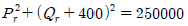
으로 표현되는 전력 계통에서 무부하시 수전단 전압을 일정하게 유지하는데 필요한 조상기의 종류와 조상 용량으로 알맞은 것은?31. 그림과 같이 3300V, 비접지식 배전선로에 접속된 주상변압기의 1차와 2차간에 고저압 혼촉 고장이 발생하였을 때, X표시 한 부분의 대지 전위는 몇 [V]인가? (단, 접지 저항은 20[Ω], 접지 저항에 흐르는 지락전류는 5[A]이다.)
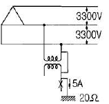
32. 송전선을 중성점 접지하는 이유가 아닌 것은?
33. 송전 계통의 안정도를 향상시키기 위한 방법이 아닌 것은?
34. 피뢰기의 충격방전 개시전압은 무엇으로 표시하는가?
35. 동기 조상기와 전력용 콘덴서를 비교할 때 전력용 콘덴서의 장점으로 맞는 것은?
36. 중거리 및 장거리 송전선로에서 페란티 효과의 발생 원인으로 볼 수 있는 것은?
37. 송전 계통에서 절연 협조의 기본이 되는 사항은?
38. 배전 계통에서 전력용 콘덴서를 설치하는 목적으로 가장 타당한 것은?
39. 전선에 전류가 흐르면 열이 발생한다. 이 경우 관계되는 법칙은?
40. 단상 2선식 배전선로의 송전단 전압 및 역률이 각각 400V, 0.9이고, 수전단 전압 및 역률이 각각 380V, 0.8일 때, 전력 손실은 몇 [W]인가? (단, 부하 전류는 10[A]이다.)
3과목: 전기기기
41. 4극, 60[Hz]인 3상 유도전동기가 있다. 1725[rpm]으로 회전하고 있을 때, 2차 기전력의 주파수 [Hz]는?
42. 3상 유도전동기의 기계적 출력 P[kW], 회전수 N[rpm]인 전동기의 토크[kgㆍm]인가?
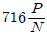
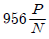
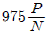
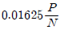
43. 부하전류가 100[A]일 때 회전속도 1000[rpm]으로 10[kgㆍm]의 토크를 발생하는 직류 직권전동기가 60[A]의 부하전류로 감소되었을 때의 토크는 몇 [kgㆍm]인가?
44. 유도 전동기의 부하를 증가시키면 역률은?
45. 유도전동기의 회전자 속도 n[rpm]으로 회전할 때, 회전자 전류에 의해 생기는 회전자계는 고정자의 회전자계 속도 ns 와 어떤 관계인가?
46. 동기 발전기를 병렬운전 하는데 필요하지 않은 조건은?
47. 변압기의 %저항 강하와 %누설 리액턴스 강하가 3[%]와 4[%]이다. 부하의 역률이 지상 60[%]일 때 이 변압기의 전압 변동률[%]은?
48. 주파수 50[Hz], 슬립 0.2인 경우의 회전자 속도가 600[rpm]일 때 유도 전동기의 극수는 몇 극인가?
49. 동기 발전기의 전부하 포화곡선은 그림 중 어느 것인가? (단, V는 단자전압, 는 여자 전류이다.)
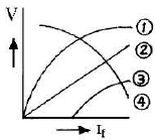
50. 반도체 사이리스터에 의한 제어는 어느 것을 변화시키는 것인가?
51. 다음과 같은 반도체 정류기 중에서 역방향 내전압이 가장 큰 것은?
52. 일정 전압 및 일정 파형에서 주파수가 상승하면 변압기 철손은 어떻게 변하는가?
53. 역기전력 100[V], 회전수 800[rpm], 토크 1.6[kgㆍm]인 직류 전동기의 전기자 전류는 약 몇 [A]인가?
54. 어떤 변압기의 1차 환산 임피던스 Z12=484[Ω]이고, 이것을 2차로 환산하면 Z21=1[Ω]이다. 2차 전압이 400[V]이면, 1차 전압은?
55. 3상 서보전동기에 평형 2상 전압을 가하여 동작시킬 때의 속도-토크 특성곡선에서 초대 토크가 발생하는 슬립 s의 범위로 가장 적당한 것은?
56. 3상 동기 발전기에서 그림과 같이 1상의 권선을 서로 똑같은 2조로 나누어서 그 1조의 권선전압을 E[V], 각 권선의 전류를 I[A]라 하고, 지그재그 Δ형으로 결선하는 경우 선간전압과 선전류는?
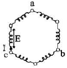
57. 직류 발전기를 병렬운전 할 때 균압 모선이 필요한 직류기는?
58. 동기 전동기의 위상 특성 곡선에서 공급 전압 및 부하를 일정하게 유지하면서 여자(계자) 전류를 변화시키면?
59. 직류 분권 전동기의 정격 전압이 300[V], 전부하 전기자 전류 50[A], 전기자 저항 0.2[Ω]이다. 이 전동기의 기동 전류를 전부하 전류의 120[%]로 제한시키기 위한 기동 저항값은 몇 [Ω]인가?
60. 단상 변압기의 병렬운전 조건에 대한 설명 중 잘못된 것은?
4과목: 회로이론 및 제어공학
61. G(s)H(s)가 다음과 같이 주어지는 계에서 근궤적 점근선의 실수축과의 교차점은?
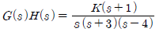
62. 다음 연산 증폭기의 출력은?
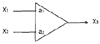
63. 특성 방정식이 s5+3s4+2s3+2s2+3s+1=0 인 경우 불안정한 근의 수는?
64.
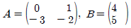
인 상태 방정식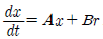
에서 제어계의 특성 방정식은?65. 폐루프 전달함수 C(s)/R(s) 가 다음과 같은 2차 제어계에 대한 설명 중 잘못된 것은?(문제 오류로 가답안 발표시 4번으로 발표되었으나 확정답안 발표시 전항 정답처리 되었습니다. 여기서는 4번을 누르면 정답 처리 됩니다.)
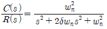
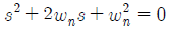
이다.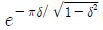
이다.66. 보드 선도의 이득 여유는 어떻게 구하는가?
67. Z-변환함수 Z/(Z-e-aT)에 대응되는 라플라스 변환 함수는?
68. 그림과 같은 신호 흐름 선도에서 C/R 의 값은?
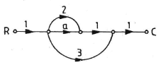
69. s 평면의 우반면에 3개의 극점이 있고, 2개의 영점이 있다. 이때 다음과 같은 설명 중 어느 나이퀴스트 선도일 때 시스템이 안정한가?
70. 조절부의 동작에 의한 분류 중 제어계의 오차가 검출될때 오차가 변화하는 속도에 비례하여 조작량을 조절하는 동작으로 오차가 커지는 것을 미연에 방지하는 제어 동작은 무엇인가?
71.
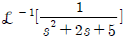
의 값은?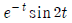
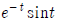
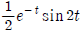
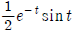
72. 다음 회로에서 입력을 V(t), 출력을 i(t)로 했을 때의 입출력 전달 함수는? (단, 스위치 s는 t=0인 순간에 회로 전압을 공급한다.)
73. 분포정수 선로에서 무왜형 조건이 성립하면 어떻게 되는가?
74. 다음과 같은 Z파라미터로 표시되는 4단자망의 1-1' 단자간에 4[A], 2-2‘ 단자 간에 1[A]의 정전류원을 연결하였을 때의 1-1‘ 단자간의 전압 V1과 2-2’간의 전압 V2가 바르게 구하여진 것은? (단, Z 파라미터는 단위는 [Ω]이다.)
75. R=20[Ω], L=0.1[H]의 직렬 회로에 60[Hz], 115[V]의 교류 전압이 인가되어 있다. 인덕턴스에 축적되는 자기 에너지의 평균값은 약 몇 [J]인가?
76. 어떤 회로에서 전압과 전류가 각각 e=50sin(ωt+θ), i=4sin(ωt+θ-30°) 일 때 무효전력 [Var]은 얼마인가?
77. 3상 불평형 전압을 Va, Vb, Vc라고 할 때, 역상 전압 V2는 얼마인가?
78. R=30[Ω], L=0.127[H]의 직렬 회로에 v=100√2 sin100πt[V] 의 전압이 인가 되었을 때 이 회로의 역률은 약 얼마인가?
79. 삼각파의 최대치가 1이라면 실효치, 평균치는 각각 얼마인가?
80. 그림과 같은 a, b 회로가 서로 역회로의 관계가 있으려면 C[μF]의 값은?
5과목: 전기설비기술기준 및 판단기준
81. 고압 가공 인입선이 케이블 이외의 것으로서 그 아래에 위험 표시를 하였다면 전선의 지표상의 높이는 몇 [m] 까지로 감할 수 있는가?
82. 최대 사용 전압이 1차 22000[V], 2차 6600[V]의 권선으로서 중성점 비접지식 전로에 접속하는 변압기의 특고압 측의 절연내력 시험 전압은 몇 [V]인가?
83. 옥내 배선의 사용 전압이 200[V]인 경우에 이를 금속관 공사에 의하여 시설하려고 한다. 다음 중 옥내 배선의 시설로서 옳은 것은?(오류 신고가 접수된 문제입니다. 반드시 정답과 해설을 확인하시기 바랍니다.)
84. 시가지에 시설되어 있는 가공 직류 전차선의 장선에는 가공 직류 전차선간 및 가공 직류 전차선으로부터 60cm 이내의 부분 이외에 접지공사를 할 때, 몇종 접지 공사를 하여야 하는가?(관련 규정 개정전 문제로 여기서는 기존 정답인 3번을 누르면 정답 처리됩니다. 자세한 내용은 해설을 참고하세요.)
85. 설계하중 900kg인 철근 콘크리트주의 길이가 16m라 한다. 이 지지물을 지반이 연약한 곳 이외의 곳에서 안전율을 고려하지 않고 시설하려고 하면 땅에 뭍히는 깊이는 몇 m 이상으로 하여야 하는가?
86. 전선 기타의 가섭선 주위에 6mm, 비중 0.9의 빙설이 부착된 상태에서 을종풍압하중은 구성재의 수직 투영면적 1m2당, 몇 Pa을 기초로 하여 계산하는가? (단, 다도체를 구성하는 전한이 아니라고 한다.)
87. 관등 회로의 사용 전압이 400V 미만 또는 방전등용 변압기의 2차 단락 전류나 관등 회로의 동작 전류가 몇 mA 이하로 방전등을 시설하는 경우에 접지공사를 생략할 수 있는가?(오류 신고가 접수된 문제입니다. 반드시 정답과 해설을 확인하시기 바랍니다.)
88. 특고압 가공전선이 저고압 가공전선 등과 제 2차 접근 상태로 시설되는 경우에 특고압 가공 전선로는 어떤 보안공사에 의하여야 하는가?(오류 신고가 접수된 문제입니다. 반드시 정답과 해설을 확인하시기 바랍니다.)
89. 제 2종 접지공사에 사용되는 접지선을 사람이 접촉할 우려가 있으며, 철주 기타의 금속체를 따라서 시설하는 경우에는 접지극을 철주의 밑면으로부터 30cm 이상의 깊이에 매설하는 경우 이외에는 접지극을 지중에서 그 금속체로부터 몇 cm 이상 떼어 매설하여야 하는가?
90. 154kV 특고압 가공전선로를 시가지에 경동연선으로 시설할 경우 단면적은 몇 mm2 이상을 사용하여야 하는가?
91. 의료실 내에 시설하는 의료기기의 보호 접지용 접지저항 값은 몇[Ω]이하인가? (단, 등전위 접지 시설 유무는 무시한다.)(관련규정 개정전 문제로 기존정답은 1번입니다. 여기서는 1번을 누르면 정답 처리 됩니다.)
92. 보안상 특히 필요한 경우 선로의 길이가 몇 km 이상의 고압 가공 전선로에는 휴대용 또는 이동용의 전력보안 통신용 전화설비를 시설하여야 하는가?(관련 규정 개정전 문제로 여기서는 기존 정답인 1번을 누르면 정답 처리됩니다. 자세한 내용은 해설을 참고하세요.)
93. 특고압 전선로의 철탑의 가장 높은 곳에 220V용 항공장애등을 설치하였다. 이 등기구의 금속제 외함은 몇 종 접지공사를 하여야 하는가?(오류 신고가 접수된 문제입니다. 반드시 정답과 해설을 확인하시기 바랍니다.)
94. 옥내에 시설하는 고압의 이동전선의 종류는?
95. 옥내에 시설하는 저압 접촉전선 공사법이 아닌것은?
96. 100kV 미만의 특고압 가공전선로의 지지물로 B종 철주를 사용하여 경간을 300m로 하고자 하는 경우, 전선으로 사용되는 경동 연선의 최소 단면적은 몇 mm2 이상이어야 하는가?
97. 가요 전선관 공사에 의한 저압 옥내배선 시설과 맞지 않은 것은?(오류 신고가 접수된 문제입니다. 반드시 정답과 해설을 확인하시기 바랍니다.)
98. 가공 전선로에 사용하는 지지물의 강도 계산에 적용하는 병종 풍압하중은 갑종 풍압하중의 몇 %를 기초로 하여 계산한 것인가?
99. 옥내에 시설하는 전동기에는 소손될 우려가 있는 과전류가 생겼을 때 자동적으로 이를 저지하거나 경보하는 장치를 시설하여야 하나, 전원 측 전로에 시설하는 과전류 차단기의 정격전류가 몇[A]이하이면 생략 가능한가?
100. 과전류가 생긴 경우 자동적으로 전로로부터 차단하는 장치를 하여야 하는 전력용 커패시터의 뱅크용량 [kVA]은?